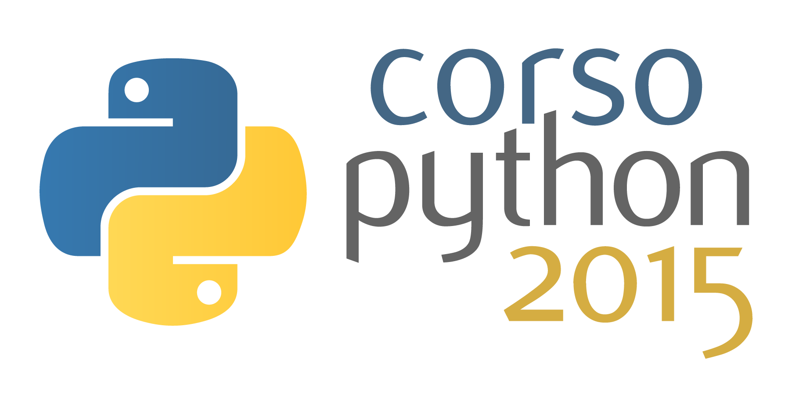
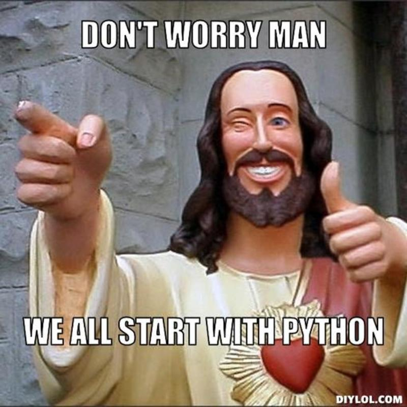
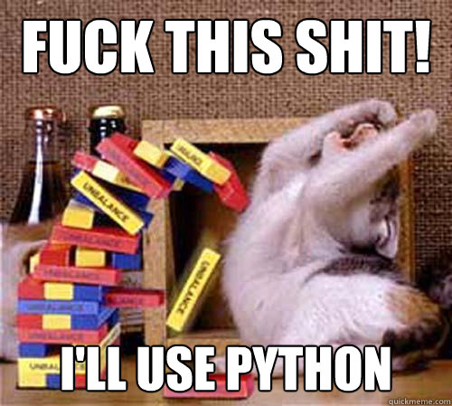
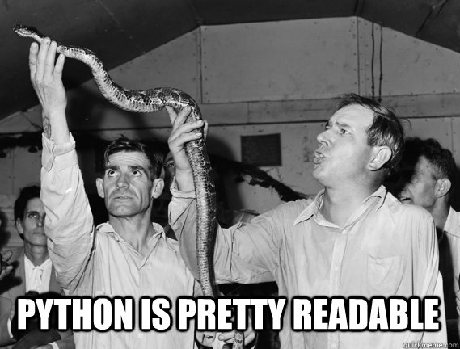
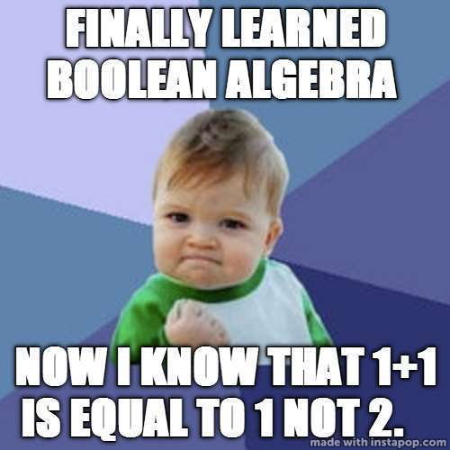

<!doctype html>
<html lang="en">

  <head>
    <meta charset="utf-8">

    <title>Corso Python 2015 - Politecnico Open unix Labs</title>

    <meta name="description" content="A gentle introduction to Python by POuL">
    <meta name="author" content="Fabrizio Ferrai">
    <meta name="author" content="Germano Gabbianelli">

    <meta name="apple-mobile-web-app-capable" content="yes" />
    <meta name="apple-mobile-web-app-status-bar-style" content="black-translucent" />

    <meta name="viewport" content="width=device-width, initial-scale=1.0, maximum-scale=1.0, user-scalable=no, minimal-ui">

    <link rel="stylesheet" href="../reveal.js/css/reveal.css">
    <link rel="stylesheet" href="../reveal.js/css/theme/night.css" id="theme">

    <!-- Printing and PDF exports -->
    <script>
      var link = document.createElement( 'link' );
      link.rel = 'stylesheet';
      link.type = 'text/css';
      link.href = window.location.search.match( /print-pdf/gi ) ? '../reveal.js/css/print/pdf.css' : '../reveal.js/css/print/paper.css';
      document.getElementsByTagName( 'head' )[0].appendChild( link );
    </script>

    <!--[if lt IE 9]>
    <script src="../reveal.js/lib/js/html5shiv.js"></script>
    <![endif]-->

    <!-- For syntax highlighting -->
	<link rel="stylesheet" href="../reveal.js/highlight.js/src/styles/solarized_light.css" id="highlight-theme">
  </head>

  <style type="text/css">
  .reveal pre code {
    color: #3f3f3f;
    background: #eee none repeat scroll 0% 0%;
    font-size: 1.5em;
    line-height: 1.4em;
    border-radius: .2em;
  }
  </style>

  <body>
    <div class="reveal">
      <!-- Any section element inside of this container is displayed as a slide -->
      <div class="slides">
        <!-- Slides are separated by newline + three dashes + newline, vertical slides identical but two dashes -->
			<section data-markdown data-separator="^\n---\n$"
			         data-separator-vertical="^\n--\n$">
				<script type="text/template">


<!-- .slide: data-background="#ffffff" -->




---

# [poul.org](https://poul.org)
<iframe src="https://poul.org" frameborder="0" width="100%" height="500px"></iframe>

---

<!-- .slide: data-background="#333333" -->

<div style="float:left; width:50%">


<h3> Fabrizio Ferrai</h3>
<h4> [ferrai.io](http://ferrai.io) </h4>
<h4> [Github](http://github.com/ff-) - [Email](mailto:fabrizio.ferrai@mail.polimi.it) </h4>
</div>

<div style="float:left; width:50%">


<h3> Germano Gabbianelli</h3>
<h4> [germano.io](http://germano.io) </h4>
<h4> [Github](http://github.com/tyrion) - [Email](mailto:germano.gabbianelli@mail.polimi.it) </h4>
</div>

---

# Calendario

* 11 Giugno: introduzione al linguaggio
* 18 Giugno: Python all'opera: real-world applications

---

# Introduzione

--

## Programmare
### Perché?

- creare <!-- .element: class="fragment" -->
- siamo circondati da software <!-- .element: class="fragment" -->
- dare ordini alle macchine <!-- .element: class="fragment" -->

**automatizzare** <!-- .element: class="fragment" -->

--

### Come
- tramite i <!-- .element: class="fragment" --> *linguaggi di programmazione*
- diversi livelli di astrazione: più o meno vicino alla macchina <!-- .element: class="fragment" -->

--

## Python
### Simple and Powerful

<blockquote>
  &ldquo;Python is an **easy to learn**, powerful programming language.
  It has efficient high-level data structures and a **simple but effective** approach to object-oriented programming.
  Python’s **elegant syntax** and **dynamic typing**, together with its interpreted nature, make it an ideal language
  for scripting and **rapid application development** in many areas on most platforms.&rdquo;
</blockquote>

--



--

## Story behind the name

<blockquote>
  &ldquo;Guido van Rossum, the creator of the Python language, named the language after the BBC show "Monty Python’s
  Flying Circus". He doesn’t particularly like snakes that kill animals for food by winding their long bodies
  around them and crushing them.&rdquo;
</blockquote>

--

## Installazione

* [Windows](http://www.howtogeek.com/197947/how-to-install-python-on-windows/) (attenti che questa guida fa riferimento ad una versione passata, la versione attuale è la 3.4.3)
* [Mac OS X](http://www.macobserver.com/tmo/article/how-to-upgrade-your-mac-to-python-3)
* Linux: dovrebbe esserci già (digitate "python3" nel terminale).

--

## L'interprete

```bash
$ python3
Python 3.4.2 (default, Oct  8 2014, 10:45:20)
[GCC 4.9.1] on linux
Type "help", "copyright", "credits" or "license" for more information.
>>>
```

--

<!-- .slide: data-background="#cc0000" -->
# Useremo Python3

---

# Hello World!

--

## C

```c
#include <stdio.h>

int main() {
	printf("Hello World!\n");
	return 0;
}
```

## Java

```java
public class HelloWorld {
	public static void main(String[] args) {
		System.out.println("Goodbye, World!");
	}
}
```

--



--


# Python

```python
print('Hello World!')
```

--

<!-- .slide: data-background="http://i.giphy.com/90F8aUepslB84.gif" -->

--



--

## Editor

Le versioni di Python per Windows e OSX contengono IDLE

<!-- .element: class="fragment" --> Altrimenti: [Notepad++](https://notepad-plus-plus.org/), [Gedit](https://wiki.gnome.org/Apps/Gedit), [Atom](https://atom.io/) 

---

# Basics

--

## Demo time: calcolatrice!

--

## Commenti

Tutto quello scritto dopo il `#` non viene eseguito

```python
>>> 1 + 1 # posso scrivere quello che voglio qui
2
```

```python
>>> """Stringa multilinea
Di solito si usa come commento
Usato anche per la documentazione
(maggiori info tra poco)"""
```
<!-- .element: class="fragment" -->

--

## Errori

Succede quando scrivete $^%%@!& *- cioè spesso.* <!-- .element: class="fragment" -->

Segnalati dall'interprete: <!-- .element: class="fragment" -->

```python
>>> 2 / 0
Traceback (most recent call last):
  File "<stdin>", line 1, in <module>
ZeroDivisionError: division by zero
``` 
<!-- .element: class="fragment" -->

--

<!-- .slide: data-background="http://i.giphy.com/ue5ZwFCaxy64M.gif" -->

--

## Variabili

Associamo dei nomi a dei valori 

e teniamoli da parte per riferirci a loro in modo semplice <!-- .element: class="fragment" -->

```python
>>> x = 6
>>> 2 * x
12

>>> y = x + 4
>>> y
10
```
<!-- .element: class="fragment" -->

--

## Bool

Informazione di tipo **Vero** o **Falso**

```python
>>> 2 < 3
True

>>> 5 + 1 == 3
False

>>> x = 3 * 2 > len("abc")
>>> x
True
```

--

## Algebra Booleana

con i __Bool__ si possono fare operazioni

```python
>>> True and False
False

>>> (4 < 3) or (1 + 1 == 2)
True

>>> not (2 < 3)
False
```

--



---

# Tipi

--

## Bool

Assume uno tra questi due valori: `True` o `False`

--

## Numeri

Possono essere `int` o `float`

```python
>>> x = 3
>>> type(x)
<class 'int'>
>>> y = 3.14
>>> type(y)
<class 'float'>
```
<!-- .element: class="fragment" -->

--

## Stringhe

```python
>>> s = "Hello"

>>> s + " " + "World"
"Hello World"
```

Informazioni sulle stringhe: <!-- .element: class="fragment" -->
```python
>>> len("ciao")
4
```
<!-- .element: class="fragment" -->

--

## Liste, Tuple, Dizionari

* Lista: `[4, "abc", 4.3]`
* Tupla: `(4, "abc", 4.3)`
* Dizionario: `{"a": 3, "b": 42}`

<!-- .element: class="fragment" --> Ma ne parleremo nel capitolo [__"Strutture Dati"__](#/11)

--

<!-- .slide: data-background="#660099" -->
## Nota: operazioni tra tipi diversi

A volte si può:
```python
>>> "abc " * 2
'abc abc '
```

...E a volte no. <!-- .element: class="fragment" -->

```python
>>> "abc" + 2
Traceback (most recent call last):
  File "<stdin>", line 1, in <module>
TypeError: Can't convert 'int' object to str implicitly
```

<!-- .element: class="fragment" -->

---

# Strutture di controllo

--

## `if`

Eseguire istruzioni solo se si verificano certe condizioni

```python
>>> x = 3
>>> if x > 2:
... 	print(x," è maggiore di 2")
... 	print("e la loro differenza è", x-2)
...
3 è maggiore di 2
e la loro differenza è 1
```

--

<!-- .slide: data-background="#cc0000" -->
## Attenzione

Per identificare un blocco di codice si usano __4 spazi__

--

## `else`

Si possono eseguire istruzioni anche se la condizione è falsa

```python
>>> x = 5
>>> y = 7
>>> if x == y:
... 	print("x è già uguale a y")
... else:
... 	print("x è diverso da y")
... 	print("li voglio rendere uguali")
... 	x = y # assegno il valore di y a x
...
x è diverso da y
li voglio rendere uguali
>>> x
7
```
<!-- .element: class="fragment" -->

--

## `while`

Eseguire più volte le stesse istruzioni (finchè una condizione è vera)

```python
>>> x = 0
>>> while x < 3:
... 	x = x + 1
... 	print("ora x vale", x)
...
ora x vale 1
ora x vale 2
ora x vale 3
```
<!-- .element: class="fragment" -->

--

## `for`

Cicli di esecuzione sulle sequenze

```python
for i in range(1, 5):
	print i
```

--

## `break`, `continue`

* `break`: interrompe l'iterazione
* `continue`: salta all'iterazione successiva

```python
for i in range(1, 8):
	if i == 2:
		continue
	if i == 6:
		break
	print i
else:
	print 'The for loop is over'
```
<!-- .element: class="fragment" -->

---

# Funzioni

--

## Cosa sono?

* sequenze di istruzioni <!-- .element: class="fragment" -->
* con degli ingressi e un'uscita <!-- .element: class="fragment" -->

```python
>>> abs(-3)
3
```
<!-- .element: class="fragment" -->

```python
>>> min(3, 4, 2)
2
```
<!-- .element: class="fragment" -->

--

## print()

Stampa l'ingresso che gli viene passato

```python
>>> y = 4.2
>>> print(y)
4.2
```

Supporta più argomenti <!-- .element: class="fragment" -->

```python
>>> print(10, 1 + 2)
10 3
```
<!-- .element: class="fragment" --> 

--

## First things First

```python
def test():
	pass
```


--

## Parametri e Argomenti


--

## Argomenti di default

--

## Keyword arguments

--

## Parametri VarArgs

--

## Il return statement

--

## Le docstring

--

<!-- .slide: data-background="http://i.giphy.com/hsTTLR7cv53e8.gif" -->

---

# Moduli

--

## Intro

--

## I file .pyc

--

## from .. import

--

## La variabile __name__

--

## La funzione dir

--

## Packages


---

# Strutture Dati

--

## Liste

--

## Introduzione a Oggetti

--

## Tuple

--

## Dizionari

--

## Sequenze

--

## Set

--

## Riferimenti

--

## Approfondimento sulle Stringhe


---

# Problem Solving

---

# Programmazione Orientata agli Oggetti

--

<!-- .slide: data-background="#00aa00" -->
## Approfondimento: duck typing
#### TODO

---

# Input e Output

---

# Eccezioni

---

# Libreria Standard


          </script>
        </section>
      </div>

    </div>

    <script src="../reveal.js/lib/js/head.min.js"></script>
    <script src="../reveal.js/js/reveal.js"></script>

    <script>

    // Full list of configuration options available at:
    // https://github.com/hakimel/reveal.js#configuration
    Reveal.initialize({
      controls: true,
      progress: true,
      history: true,
      center: true,

      transition: 'slide', // none/fade/slide/convex/concave/zoom

      // Optional reveal.js plugins
      dependencies: [
        { src: '../reveal.js/lib/js/classList.js', condition: function() { return !document.body.classList; } },
        { src: '../reveal.js/plugin/markdown/marked.js', condition: function() { return !!document.querySelector( '[data-markdown]' ); } },
        { src: '../reveal.js/plugin/markdown/markdown.js', condition: function() { return !!document.querySelector( '[data-markdown]' ); } },
        { src: '../reveal.js/plugin/highlight/highlight.js', async: true, callback: function() { hljs.initHighlightingOnLoad(); } },
        { src: '../reveal.js/plugin/zoom-js/zoom.js', async: true },
        { src: '../reveal.js/plugin/notes/notes.js', async: true }
      ]
    });

  </script>

  </body>
</html>
